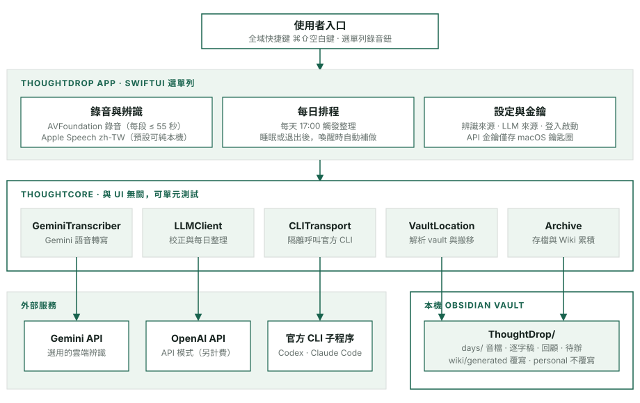
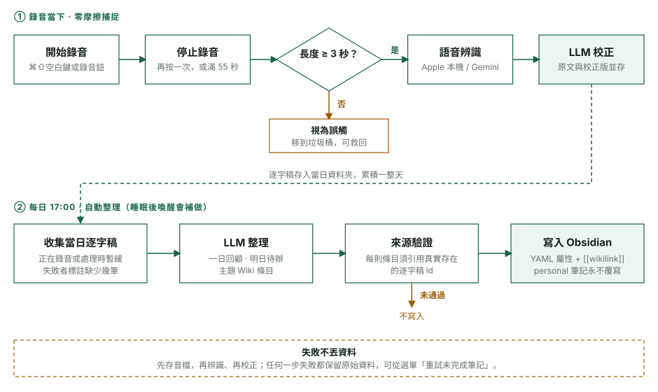

零摩擦捕捉
快捷鍵或一顆按鈕即可錄音，每段最多 55 秒，專為短想法設計。
macOS App · 個人知識管理
CASE STUDY 03
拾念 ThoughtDrop 是原生 SwiftUI 選單列 App：錄下短想法，自動轉成校正後的逐字稿，每天傍晚整理成回顧、明日待辦，並累積到自己的 Obsidian 知識庫。
這是個人自用的專案。構想、需求與設計取捨由我提出，並與 AI 程式助理（Codex、Claude Code）協作實作。目前以本機開發簽章執行，尚未公證或上架；麥克風權限與實際語音品質需在使用者的機器上互動驗收。
問題
想法常在走路、洗澡、發呆時出現，打開筆記軟體的瞬間就忘了。
設計
零摩擦錄音，加上自動校正與每日整理，把想法依主題累積進自己的 Obsidian vault。
技術
SwiftUI、AVFoundation、Apple Speech，搭配 Codex／Claude Code CLI 或 API 做 LLM 整理。
開發動機
想法出現得快、消失得更快。解鎖手機、找到筆記軟體、決定放在哪個資料夾，這幾步就足以讓念頭溜走。語音備忘錄雖然快，但錄完之後只剩一堆沒有標題、沒辦法搜尋的音檔。
我希望「錄下來」是唯一需要做的事，其餘交給系統：校正辨識錯字、歸納成每日回顧，並把想法依主題累積進自己的 Obsidian vault，而不是散落在不同地方。
系統架構

ThoughtDrop/ 子資料夾。操作流程

設計取捨
選單列常駐、全域快捷鍵、本機檔案與登入啟動，用系統框架最直接；不錄音時不開麥克風，也不跑動畫。
Wiki 條目必須引用真實存在的逐字稿 id，未通過驗證就不寫入。官方 CLI 以唯讀 sandbox 在獨立暫存目錄執行，停用工具與 MCP，內容走標準輸入，避免逐字稿被當成指令。
wiki/generated 會被重新整理覆寫，wiki/personal 永不覆寫；辨識原文與校正版並存，方便回頭檢查 LLM 有沒有改錯。
案例重點
快捷鍵或一顆按鈕即可錄音，每段最多 55 秒，專為短想法設計。
先存音檔，再辨識、再校正；每一步的狀態都保留，可重試且不會重複寫入。
預設 Apple 本機辨識，音訊不離開 Mac；API 金鑰只存鑰匙圈；不上傳整個 vault。
設計原則：
捕捉要快，整理要自動，資料要留在自己手上。
目前限制：尚無 iPhone／Apple Watch 入口、跨裝置同步與語意搜尋。
回到精選作品 ←